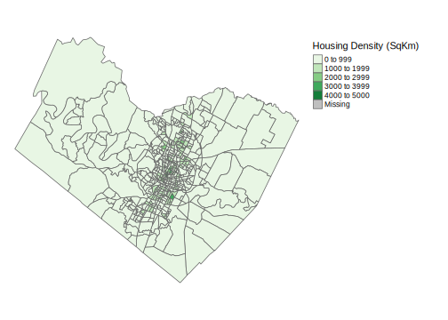
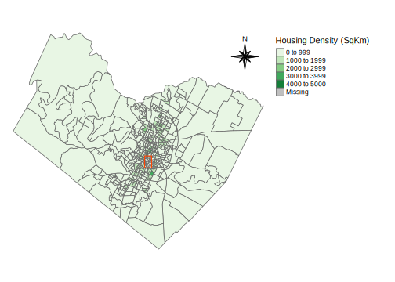
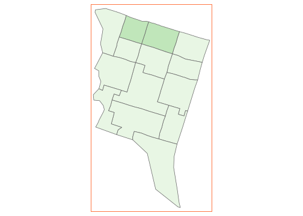
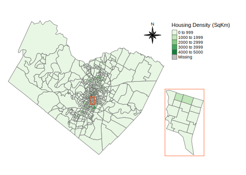
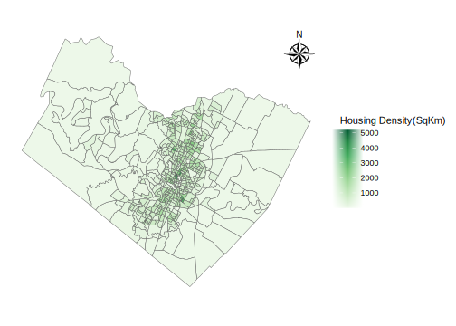

Simple Spatial Analysis With R
Author: Patrick Danso
Date: 2024-08-10
Mapping Census Data with R
This is a tutorial on how to map spatial data with R. In this
tutorial, census data will be obtained using two different methods and
then mapped to show the housing density in Travis County - Texas,
emphasizing Downtown Austin in the years 1990 and 2000. This tutorial is
in two parts. In part one, census data will be downloaded from the NHGIS website and then mapped. The
second part of this tutorial follows an easier method of census data
extraction using the tidycensus package
and how to map the obtained data. The Census Geography used in this
tutorial is Block Groups.
Objectives
- Download census data from NHGIS
- Prepare data for mapping
- Map census data using tmap
- Download census data using tidycensus
- Map census data using ggplot2
This tutorial assumes that the learner is familiar with or has basic knowledge of Geographic Information Systems. Now let’s begin! :)
PART ONE
Data Cleaning
The first step to mapping the census data obtained from the NHGIS
website is to look at the dataset and then process it for mapping. This
section aims to import the downloaded dataset into R and make them clean
enough for mapping. The dplyr tool is required to help with
easy data manipulation. This function forms part of the tidyverse package,
thus, while it can be installed and opened individually, installing and
opening the full tidyverse is ideal for this tutorial. The
sf package is
useful for handling spatial vector data and it will be useful in this
tutorial. This tutorial assumes that all the required packages have
already been installed in R. If any package has not been installed, use
the install.packages() function to install it.
#Open the required libraries
library(tidyverse)
library(sf)
#Import the data and store it under a new name
Data1990<-read.csv("INSERT YOUR FILE PATH HERE")
#Have a glance at the data
head(Data1990)## GISJOIN YEAR STUSAB ANRCA AIANHHA RES_ONLYA TRUSTA AIANCC RES_TRSTA
## 1 G480001095011 1990 TX NA NA NA NA NA NA
## 2 G480001095012 1990 TX NA NA NA NA NA NA
## 3 G480001095013 1990 TX NA NA NA NA NA NA
## 4 G480001095021 1990 TX NA NA NA NA NA NA
## 5 G480001095022 1990 TX NA NA NA NA NA NA
## 6 G480001095023 1990 TX NA NA NA NA NA NA
## BLOCKA BLCK_GRPA TRACTA CD101A C_CITYA CMSA COUNTY COUNTYA CTY_SUBA
## 1 NA 1 9501 NA NA 99 Anderson 1 NA
## 2 NA 2 9501 NA NA 99 Anderson 1 NA
## 3 NA 3 9501 NA NA 99 Anderson 1 NA
## 4 NA 1 9502 NA NA 99 Anderson 1 NA
## 5 NA 2 9502 NA NA 99 Anderson 1 NA
## 6 NA 3 9502 NA NA 99 Anderson 1 NA
## COUSUBCC DIVISIONA MSA_CMSAA PLACEA PLACECC PLACEDC PMSAA REGIONA STATE
## 1 NA 7 9999 NA NA NA 9999 3 Texas
## 2 NA 7 9999 NA NA NA 9999 3 Texas
## 3 NA 7 9999 NA NA NA 9999 3 Texas
## 4 NA 7 9999 NA NA NA 9999 3 Texas
## 5 NA 7 9999 NA NA NA 9999 3 Texas
## 6 NA 7 9999 NA NA NA 9999 3 Texas
## STATEA URBRURALA URB_AREAA CD103A AREALAND AREAWAT ANPSADPI FUNCSTAT INTPTLAT
## 1 48 NA NA NA 165167 4035 BG 1 S 31989858
## 2 48 NA NA NA 15451 37 BG 2 S 32061100
## 3 48 NA NA NA 231306 232 BG 3 S 31974332
## 4 48 NA NA NA 288742 2468 BG 1 S 31969331
## 5 48 NA NA NA 102001 243 BG 2 S 31874321
## 6 48 NA NA NA 114305 1286 BG 3 S 31816593
## INTPTLNG PSADC ESA001
## 1 -95493659 NA 504
## 2 -95499077 NA 548
## 3 -95618887 NA 493
## 4 -95754825 NA 607
## 5 -95817188 NA 227
## 6 -95784733 NA 401Fortunately, the data used in this tutorial is structured with few processing to be made. From the table, the Total Number of Housing Units is assigned to column ESA001. The GISJOIN Column is a character variable which gives a unique id to each row and it is very useful for Spatial Joins. The TRACTA Column provides the census tract code for each each county and it is very useful with selecting places within each County.
#Now let's clean the data and filter out Travis from the COUNTY variable
#Also, select the needed variables and then rename the Total Housing Units
Data1990<-Data1990|>filter(COUNTY=="Travis")|>select(GISJOIN, COUNTY, TRACTA, ESA001)|>rename(HousingUnits=ESA001)
#Now import the shapefile
Shape1990<-read_sf("INSERT YOUR FILE PATH HERE")
#Take a look at the shapefile
head(Shape1990)## Simple feature collection with 6 features and 8 fields
## Geometry type: MULTIPOLYGON
## Dimension: XY
## Bounding box: xmin: -4985513 ymin: 3283276 xmax: -3806974 ymax: 3838300
## Projected CRS: USA_Contiguous_Albers_Equal_Area_Conic
## # A tibble: 6 × 9
## FIPSSTCO TRACT GROUP STFID GISJOIN GISJOIN2 SHAPE_AREA SHAPE_LEN
## <chr> <chr> <chr> <chr> <chr> <chr> <dbl> <dbl>
## 1 02013 990000 1 020139900001 G020013099001 0200130… 9.73e9 2054992.
## 2 02013 990000 2 020139900002 G020013099002 0200130… 1.19e9 966449.
## 3 02013 990000 3 020139900003 G020013099003 0200130… 6.60e9 1423147.
## 4 02013 990000 4 020139900004 G020013099004 0200130… 6.89e8 422220.
## 5 02013 990099 4 020139900994 G02001309900… 0200130… 2.48e2 71.9
## 6 02016 961900 4 020169619004 G020016096194 0200160… 5.73e9 2433284.
## # ℹ 1 more variable: geometry <MULTIPOLYGON [m]>#Now join the dataset to the shapefile using GISJOIN
Data1990<-merge(Data1990, Shape1990, by="GISJOIN")
#Take a glance
head(Data1990)## GISJOIN COUNTY TRACTA HousingUnits FIPSSTCO TRACT GROUP STFID
## 1 G48045300001011 Travis 101 412 48453 000101 1 484530001011
## 2 G48045300001012 Travis 101 370 48453 000101 2 484530001012
## 3 G48045300001013 Travis 101 766 48453 000101 3 484530001013
## 4 G48045300001014 Travis 101 172 48453 000101 4 484530001014
## 5 G48045300001015 Travis 101 235 48453 000101 5 484530001015
## 6 G48045300001021 Travis 102 710 48453 000102 1 484530001021
## GISJOIN2 SHAPE_AREA SHAPE_LEN geometry
## 1 48045300001011 966215.4 5581.166 MULTIPOLYGON (((-168128.1 -...
## 2 48045300001012 469290.9 3368.958 MULTIPOLYGON (((-168190.1 -...
## 3 48045300001013 525051.4 4426.543 MULTIPOLYGON (((-168017.8 -...
## 4 48045300001014 536481.6 3523.410 MULTIPOLYGON (((-167857.5 -...
## 5 48045300001015 630604.9 3650.997 MULTIPOLYGON (((-168539.5 -...
## 6 48045300001021 3091207.1 9995.464 MULTIPOLYGON (((-168997.9 -...Simple Spatial Calculations
The main objective of this part of the tutorial is to map the Housing Density for the State of Texas Using 1990 Block Group Census Data. The first part of this tutorial is focused on the importation, cleaning, and mapping of census data from NHGIS. Now that we have the data in a nicely structured format, it is time to make simple spatial calculations with R. From the data, it can be seen that the simple feature type is Multipolygon (a set of polygons). Knowing this, we can easily calculate the total land area in each census block group and then calculate the residential or housing density for Travis County at the block group level.
#First, let's convert the data into sf object and then use the appropriate projection for the State of Texas
Data1990<-st_as_sf(Data1990)
#Now find the best CRS for the dataset and then apply it to the dataset. The crsuggest library will help with this.
library(crsuggest)
suggest_crs(Data1990)## # A tibble: 10 × 6
## crs_code crs_name crs_type crs_gcs crs_units crs_proj4
## <chr> <chr> <chr> <dbl> <chr> <chr>
## 1 6588 NAD83(2011) / Texas South Cent… project… 6318 us-ft +proj=lc…
## 2 6587 NAD83(2011) / Texas South Cent… project… 6318 m +proj=lc…
## 3 3674 NAD83(NSRS2007) / Texas South … project… 4759 us-ft +proj=lc…
## 4 3673 NAD83(NSRS2007) / Texas South … project… 4759 m +proj=lc…
## 5 32140 NAD83 / Texas South Central project… 4269 m +proj=lc…
## 6 32040 NAD27 / Texas South Central project… 4267 us-ft +proj=lc…
## 7 2919 NAD83(HARN) / Texas South Cent… project… 4152 us-ft +proj=lc…
## 8 2847 NAD83(HARN) / Texas South Cent… project… 4152 m +proj=lc…
## 9 2278 NAD83 / Texas South Central (f… project… 4269 us-ft +proj=lc…
## 10 6580 NAD83(2011) / Texas Centric La… project… 6318 m +proj=lc…#Project using the NAD83(2011) / Texas South Central
Data1990<-Data1990|>st_transform(6587)
#Now that the dataset has been converted to sf objects successfully and projected, lets calculate the area for each block group
#Getting the area will help with calculating the housing density. The Units library will be useful to set the unit for our calculations.
library(units)
#Calculate the area and store it under a new column
Data1990$AreaPerSqKm<-round(set_units(st_area(Data1990$geometry), km^2), digits = 2)
#Now lets calculate housing Density
Data1990$HousingDensity<-Data1990$HousingUnits/Data1990$AreaPerSqKm
#Let's check if our calculations and projection worked as desired
Data1990|>select(HousingDensity, AreaPerSqKm)|> head(5)## Simple feature collection with 5 features and 2 fields
## Geometry type: MULTIPOLYGON
## Dimension: XY
## Bounding box: xmin: 718794.5 ymin: 4274595 xmax: 720665.8 ymax: 4278177
## Projected CRS: NAD83(2011) / Texas South Central
## HousingDensity AreaPerSqKm geometry
## 1 424.7423 [1/km^2] 0.97 [km^2] MULTIPOLYGON (((720048.3 42...
## 2 787.2340 [1/km^2] 0.47 [km^2] MULTIPOLYGON (((720023.4 42...
## 3 1445.2830 [1/km^2] 0.53 [km^2] MULTIPOLYGON (((720242.5 42...
## 4 318.5185 [1/km^2] 0.54 [km^2] MULTIPOLYGON (((720407.7 42...
## 5 373.0159 [1/km^2] 0.63 [km^2] MULTIPOLYGON (((719648.6 42...#Hurray! It worked.Mapping with Tmap
Now that we have the needed variables from our calculations, it is
now time to visualize or map the census data. In this part, we are going
to map our data using the tmap package.
The Classification method used here is manual interval. In
tmap, the breaks can be passed through breaks in
the polygon layer as a vector.
#Open tmap
library(tmap)
#Create the map and store it as an Object
#The classification method used is manual interval.
Map1<-tm_shape(Data1990)+
tm_polygons(col = "HousingDensity",
palette="Greens", title="Housing Density (SqKm)",
breaks=c(0, 1000, 2000, 3000, 4000, 5000),
labels=c("0 to 999", "1000 to 1999","2000 to 2999", "3000 to 3999", "4000 to 5000"))+
tm_layout(frame = FALSE,
legend.outside = TRUE)
#View Map
Map1
Hurray! We have created our first map for this tutorial in a few easy steps. It is now time to locate Downtown Austin from Travis County and then and then create an inset map showing the housing density in Downtown Austin Neighborhood.
Creating an Inset Map
To create the inset map, we have to first locate Downtown Austin Neighborhood from the dataset and then create a subset. A simple way to locate the city of Austin from our dataset is to use the Tract code. From our data, the tract code for each census geography is stored under TRACTA column. Now the question is; how can we find the tract code for Travis County?
While a simple search will do the magic, the Census Geocoder Website is very efficient. Note that, tract codes change with time and thus will strongly recommend to check the updated tract codes on the Geocoder website provided above. For the purpose of this tutorial, refer to the Census Beureau Link Here to view the census tracts for the year 1990.
#The census tract codes for Downtown Austin in 1990 are 7 and 11.
#The neighborhood had two census tracts in 1990. Now lets create a subset from the dataset.
Downtown1990<-Data1990[Data1990$TRACTA%in%c("7", "11"), ]
#View the subset
view(Downtown1990)
#It worked! Create a Bounding Box
In this step, we are going to create a bounding box to mark the boundary of the neighborhood. We can do this by creating a simple feature list column from our subset and then add it to Map1.
#Create bounding box for the neighborhood
BoundingBox<-st_bbox(Downtown1990)|>st_as_sfc()
#Now add the bounding box to Map1 and Store it as Map2, also add a compass to the map
Map2<-Map1+tm_shape(BoundingBox)+tm_polygons(border.col = "orangered", lwd=1.5, alpha = 0)+
tm_compass(type = "8star", size = 3, position = c("right","top"))
#View Map
Map2
Yay! We created our second map for this tutorial. We are making Progress!
Finally let’s create the inset map to be added to the final map.
#Create a map from Downtown1990 dataset with similar breaks as that of Map1
Map3<-tm_shape(Downtown1990, bbox = BoundingBox)+
tm_polygons(col = "HousingDensity",
palette="Greens",
breaks=c(0, 1000, 2000, 3000, 4000, 5000),
labels=c("0 to 999", "1000 to 1999","2000 to 2999", "3000 to 3999", "4000 to 5000"))+
tm_layout(legend.show = FALSE, frame.lwd = 2, frame = "orangered")
#View the Map
Map3
Now let’s add Map3 as an inset map to Map2. Here,
we will convert the maps to Grid Graphic Object. The reason for doing
this is to enable us draw the the plots and store it as a single plot.
In this tutorial, we will convert the plots to grob using
the tm_grob function since we are working with tmaps. After
that, we will use functions from the cowplot package
to draw the grobs (Graphic Objects).
#Open cowplot
library(cowplot)
#Export plots to grobs
#Note the aspect ratios generated for each grob. This will help with placements and adjustments.
Map2Grob<-tmap_grob(Map2)
Map3Grob<-tmap_grob(Map3)
#Now draw the plots and store it as a single object using ggdraw
FinalMap<-ggdraw()+
draw_grob(Map2Grob)+
draw_grob(Map3Grob, x=0.25, height = 0.4, y=0.1)
#View the Map
FinalMap
Hurray! We have created our final map for part one of this tutorial. We can now export the map and use it as needed. This marks the end of Part One of this tutorial. See you in Part Two! :)
PART TWO
It’s nice to see you again :) I am glad to see you make progress!
In this part of the tutorial, We are going to create a similar map just like the one we made in part one. This means we are going to create a housing density map for Travis County-Texas with emphasis on Downtown Austin. However, this part differs from that of the previous with regards to data importation, year and mapping package.
Here, we are going to download our census data from the United States
Census Bureau using the tidycensus package and then map the
census data using ggplot2. The aim of this part of the
tutorial is learn alternatives to accessing census data and mapping
them. R provides various alternatives to mapping spatial data and it is
almost impossible to cover all in this tutorial. However, we will cover
most of them in upcoming tutorials.
Download Census Data
The tidycensus package is designed to provide persons who are
interested in working with census data easy access to pre-processed
census data in R. Take a look at this tidycensus package Link
to learn the package’s syntax. Before we proceed, we will need an API
Key to access the data. Click Here to
request Census Data API Key.
Now let’s download the required data using tidycensus. Here, we will be using decennial data for the year 2000. We will be using summary file 1 from the 2000 decennial census since we are working with demographic data.
#Lets take a look at the variables for the year 1990 and then Identify the the name of the variable needed for our project
library(tidycensus)
Variables<-load_variables(year = 2000, "sf1")
#From the table we can see that the total housing unit variable is named 'H001001'. We will be using this to download our data.
Data2000<-get_decennial(geography = "block group", variables = c(HousingUnits="H001001"), year=2000, state = "TX",
county = "Travis", key = "INSERT YOUR KEY HERE",
sumfile = "sf1", geometry = TRUE)
#Now let's structure our data in a nice way.
Data2000<-Data2000|>pivot_wider(names_from = variable, values_from = value)From the code above, we downloaded our data using tidycensus while
setting geometry to true to enable us map our
data. The data downloaded from the tidycensus package is pre-prepared
and thus, there is little or nothing to do with regards to data cleaning
for the purpose of this tutorial.
Now let’s map our data using ggplot 2.
Mapping with GGplot2
#Calculate the area and store it under a new column
Data2000$AreaPerSqKm<-round(set_units(st_area(Data2000$geometry), km^2), digits = 2)
#Now lets calculate housing Density
Data2000$HousingDensity<-Data2000$HousingUnits/Data2000$AreaPerSqKm
#Now lets drop the units. This is to enable easy mapping with geom_sf
Data2000$HousingDensity<-drop_units(Data2000$HousingDensity)
#Project using the same projection used in Part 1
Data2000<-Data2000|>st_transform(6587)Notice that we did not covert the data to sf features. That is because the data from the tidycensus package is pre-processed for mapping.
#Create a map for Housing Density in Travis County using ggplot2 and then store it as an object
Gmap1<-ggplot(data = Data2000)+
geom_sf(aes(fill=HousingDensity))+
scale_fill_distiller(palette = 4, direction = 1)+theme_map()
Gmap1
#Applying theme_map() from the cowplot package as a layer removes all the grids from the plot.
#Alternatively, you can remove the grids manually. This method is shown as follows;
Gmap1<-ggplot(data = Data2000)+
geom_sf(aes(fill=HousingDensity))+
theme_minimal()+
theme(panel.grid = element_blank(),
axis.text.x = element_blank(),
axis.text.y = element_blank(),
axis.ticks = element_blank())+
scale_fill_distiller(palette = "Greens",
breaks=c(1000, 2000, 3000, 4000, 5000),
limits=c(0, 5200), direction = 1)+
labs(fill = "Housing Density(SqKm)")
Gmap1
#Now lets add some elements to our map. We can do this by installing ggspatial
library(ggspatial)
Gmap1<-Gmap1+annotation_north_arrow(location="tr", style = north_arrow_nautical())
#View Map
Gmap1
Notice how we passed the breaks through geom_sf(). Now let’s create
an inset map and then add it the map. Click
This Link to learn how ggspatial work.
Creating an Inset Map
Click Here to view the Census Tract Outline Map for Travis County for the year 2000.
#The census tract codes for Downtown Austin in 2000 are 7 and 11.
#The neighborhood had two census tracts in 2000. Now lets create a subset from the dataset.
#Since the column is character(string), we will select using str_detect()
Downtown2000<-Data2000[str_detect(Data2000$NAME, "Census Tract 7|Census Tract 11"), ]
#Now lets create a bounding box
BoundingBox2<-st_bbox(Downtown2000)|>st_as_sfc()
#Add the bounding box to the map
Gmap2<-Gmap1+geom_sf(data = BoundingBox2, color="orangered", alpha=0, lwd=0.5)+
theme(legend.position = c(0.1, 0.15))
#View Map
Gmap2
#Map for Downtown Austin
Gmap3<-ggplot(data = Downtown2000)+
geom_sf(aes(fill=HousingDensity))+
theme_minimal()+
theme(panel.grid = element_blank(),
axis.text.x = element_blank(),
axis.text.y = element_blank(),
axis.ticks = element_blank(),
legend.position = "none",
panel.border = element_rect(color = "orangered",
fill = NA,
size = 0.7))+
scale_fill_distiller(palette = "Greens",
breaks=c(1000, 2000, 3000, 4000, 5000),
limits=c(0, 5200), direction = 1)
#View Map
Gmap3
#Now draw the two maps using cowplot.
#We will first convert the plots to grobs using ggplotGrob since we are working with ggplot2
GmapGrob1<-ggplotGrob(Gmap2)
GmapGrob2<-ggplotGrob(Gmap3)
FinalMap2<-ggdraw()+
draw_grob(GmapGrob1)+
draw_grob(GmapGrob2, x=0.37, height = 0.4)
#View Map
FinalMap2
Yay! We did it! We have achieved all the goals set for this tutorial.
In this tutorial, we downloaded census data using the tidycensus
package, imported census data from the NHGIS website, and mapped census
data using ggplot2 and the
tmap (Thematic Map) packages in R for a simple spatial
analysis. I hope you found this tutorial helpful.
END OF TUTORIAL